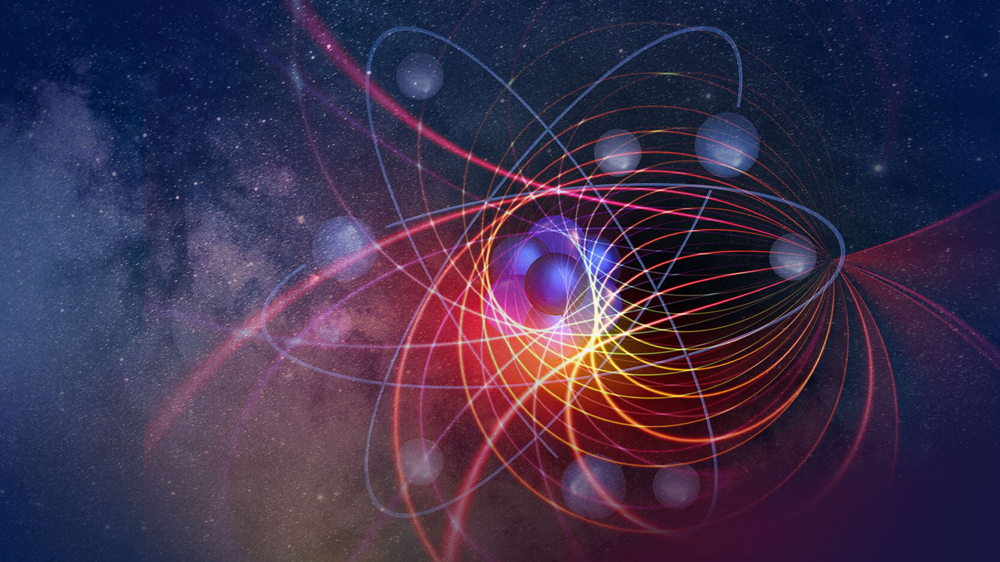

Előadás tematikája:
-
EA1: Magnetosztatikai alapjelenségek. Mágneses indukcióvektor bevezetése. Ampere-erő. Lorentzerő. Van Allen övek. Tömegspektroszkóp. Ciklotron. Áramhurokra ható forgatónyomaték.
Mágneses dipólmomentum. Elektromotor
-
EA2: Mágneses-indukciófluxus. Mágneses Gauss-törvény. Mágneses polarizáció. Mágnesezettség
vektor. Mágneses térerősség bevezetése. Anyagegyenlet. Dia- és paramágnesség atomi értelmezése.
Curie-törvény. Ferromágnesség. Hiszterézis. Magnetosztrikció. Ampere-féle gerjesztési törvény és
alkalmazásai. Hosszú egyenes vezető és szolenoid mágneses tere.
-
EA3: Határfeltételek. Biot-Savart törvény vékony vonalas vezetőre. Elektromágneses indukció
jelensége. Mozgási indukció. Neumann törvénye. Váltakozó áramú generátor. A feszültség és az
áramerősség effektív értéke
-
EA4: Nyugalmi indukció. Faraday-féle indukciós törvény. Lenz-törvény. Önindukció és kölcsönös
indukció. Transzformátor. Általános huroktörvény. Tranziens jelenségek RL és RC körökben.
Mágneses tér energiája és energiasűrűsége
-
EA5: Soros RLC kör gerjesztett elektromágneses rezgései. Impedancia. Fázisábra. Feszültség a
különböző kapcsolási elemeken. Teljesítmény.
-
EA6: Ampere-Maxwell-féle gerjesztési törvény. Eltolási áramsűrűség. Maxwell-egyenletek teljes
rendszere. Hullámegyenlet. Elektromágneses monokromatikus síkhullám szigetelőkben. A teljes
elektromágneses spektrum (színkép). Energiasűrűség és energiaterjedés az elektromágneses
hullámban. Poynting vektor. A hullám intenzitása. Koherens hullámok. Interferencia.
-
EA7: Hullám viselkedése két közeg határfelületén. Snellius-Descartes törvény. Optikai leképezés
kis nyílásszögű gömbtükörrel, és vékony lencsével. Diszperzió
-
EA8: Modern fizika születése. A fény terjedési sebessége. A speciális relativitás elve. Idő dilatáció,
távolság kontrakció. Sebességek összeadása. Tömeg-energia ekvivalencia.
-
Őszi szünet
-
EA9: Hőmérsékleti sugárzás. Planck hipotézis. Stefan-Boltzmann-törvény. Wien-féle eltolódási
törvény. Fényelektromosság. A mikrorészecskék kettős természete. Elektron interferencia. De
Broglie-féle anyaghullámok. Gázok gőzök abszorpciós és emissziós színképe. Bohr-posztulátumok.
Franck-Hert-kísérlet. A H-atom Bohr-féle modellje
-
EA10: Az atomok gerjesztett állapota. Indukált emisszió. Populációinverzió. A lézer működése,
típusai és alkalmazásai. Röntgensugárzás és alkalmazásai. Fékezési és karakterisztikus sugárzás.
Moseley-törvény
-
EA11: Az anyag felépítése. Nukleáris kölcsönhatás. Az atommag kötési energiája. Tömegdefektus.
Radioaktivitás. α, β, γ bomlás. Bomlástörvény. Bomlási sorok. Radioaktív sugárzások mérése. Az
ionizáló sugárzás hatásai. Maghasadás, láncreakció, atomreaktorok működése. Magfúzió
-
Kérdések, problémák és gyakorlás a zárthelyi dolgozatra
-
Kérdések, problémák és gyakorlás a zárthelyi dolgozatra
Egyéb fontos dátumok:
5. hét – 1. zárthelyi dolgozat írása gyakorlaton (anyaga #1-4)
10.14 szerda 17:00-17:50 – 1. pót zárthelyi dolgozat írása (hely később, anyaga #1-4)
Egyelőre kérdéses időpont – Labormérés (a vírushelyzet függvényében lesz megtartva)
13. hét – 2. zárthelyi dolgozat írása gyakorlaton (anyaga #5-11)
12.9 szerda 17:00-17:50 – 2. pót zárthelyi dolgozat írása (hely később, anyaga #5-11)
